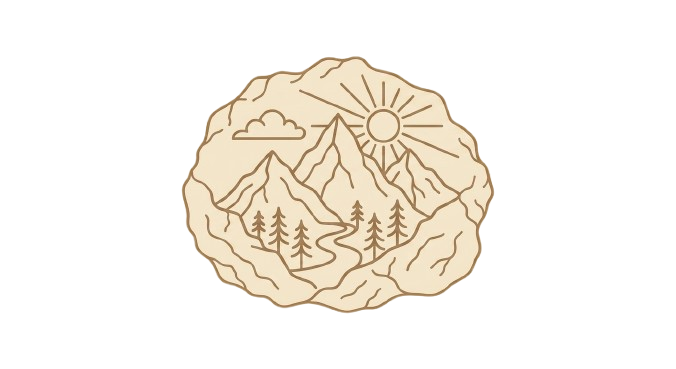
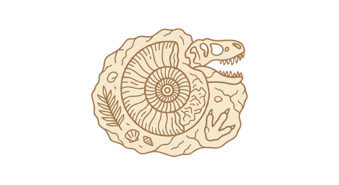
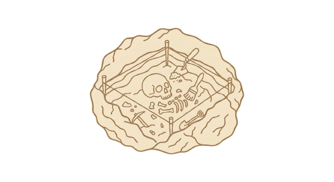

Concepto de la exposición permanente
Recorrido expositivo por ámbitos

Exposición permanente y recorridoEscaleras y transición
AAN — Antesala
Ámbitos A0–A9 y terraza ATZ
Recursos museográficos
Público objetivo
Experiencia del visitante

Linea temporal interactivaExplora las grandes etapas para entender la evolucion de Sierra Magina y su registro arqueologico.

Recreacion 3D interactiva del museoExplora el museo por secciones. Pulsa en una seccion para resaltarla y ver su descripcion.
Pulsa una zona coloreada del plano o elige una seccion en la lista.